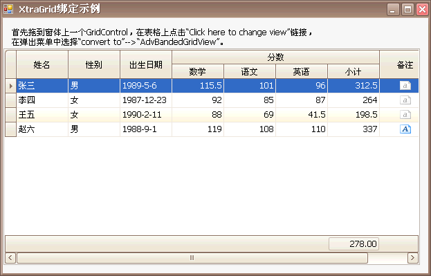

Devexpress系列控件功能很强大，使用起来也不太容易，我也是边摸索边使用，如果有时间我会把常用控件的使用方法整理出来的。
练习结果：（需要引入多个dll。 DevExpress下Data, PrintingV11.Core,Utils,XtraBars, XtraEditors, XtraGrid)
步骤。 增加界面子空间， 绑定view，自定义view下column的增加，然后双向绑定等.
遗留问题： 如何显示特定（比如小数点后2位） 的显示格式。【已解决】
qtyEditer.DisplayFormat.FormatType = DevExpress.Utils.FormatType.Numeric;qtyEditer.DisplayFormat.FormatString = "{0:N3}";qtyEditer.Mask.MaskType = DevExpress.XtraEditors.Mask.MaskType.Numeric;qtyEditer.Mask.EditMask = "N3";qtyEditer.Precision = 3;//包括了显示及编辑。 列的显示设置及编辑设置.
练习代码：
using System;using System.Collections.Generic;using System.ComponentModel;using System.Windows.Forms;using DevExpress.XtraGrid.Columns;using DevExpress.XtraGrid.Views.Base;using DevExpress.XtraGrid.Views.BandedGrid;using DevExpress.XtraEditors.Repository;namespace testDev{public partial class Form1 : DevExpress.XtraEditors.XtraForm{public Form1(){InitializeComponent();initGrid();}private void initGrid(){BandedGridView view = advBandedGridView1 as BandedGridView;//注意命名空间引入view.BeginUpdate();view.BeginDataUpdate();view.Bands.Clear();#region 样式view.OptionsView.ShowColumnHeaders = false;view.OptionsView.ShowGroupPanel = false;view.OptionsView.EnableAppearanceEvenRow = false;view.OptionsView.EnableAppearanceOddRow = true;view.OptionsView.ShowFilterPanelMode = ShowFilterPanelMode.Never;view.OptionsCustomization.AllowColumnMoving = false;view.OptionsCustomization.AllowColumnResizing = false;view.OptionsCustomization.AllowGroup = false;view.OptionsCustomization.AllowFilter = false;view.OptionsCustomization.AllowSort = true;view.OptionsSelection.EnableAppearanceFocusedRow = true;view.OptionsBehavior.Editable = true; //用户编辑单元格#endregion#region 添加标题GridBand bandID = view.Bands.AddBand("ID");bandID.Visible = false; //隐藏GridBand bandName = view.Bands.AddBand("姓名");GridBand bandSex = view.Bands.AddBand("性别");GridBand bandBirth = view.Bands.AddBand("出生年月");GridBand bandScore = view.Bands.AddBand("得分");GridBand bandMath = bandScore.Children.AddBand("数学");GridBand bandChinese = bandScore.Children.AddBand("语文");GridBand bandEnglish = bandScore.Children.AddBand("英语");GridBand bandSubTotal = bandScore.Children.AddBand("小计");GridBand bandAverge = bandScore.Children.AddBand("平均分");GridBand bandRemark = view.Bands.AddBand("备注");#endregion#region 列标题对齐方式bandName.AppearanceHeader.TextOptions.HAlignment = DevExpress.Utils.HorzAlignment.Center;bandSex.AppearanceHeader.TextOptions.HAlignment = DevExpress.Utils.HorzAlignment.Center;bandBirth.AppearanceHeader.TextOptions.HAlignment = DevExpress.Utils.HorzAlignment.Center;bandScore.AppearanceHeader.TextOptions.HAlignment = DevExpress.Utils.HorzAlignment.Center;bandMath.AppearanceHeader.TextOptions.HAlignment = DevExpress.Utils.HorzAlignment.Center;bandChinese.AppearanceHeader.TextOptions.HAlignment = DevExpress.Utils.HorzAlignment.Center;bandEnglish.AppearanceHeader.TextOptions.HAlignment = DevExpress.Utils.HorzAlignment.Center;bandSubTotal.AppearanceHeader.TextOptions.HAlignment = DevExpress.Utils.HorzAlignment.Far;bandAverge.AppearanceHeader.TextOptions.HAlignment = DevExpress.Utils.HorzAlignment.Far;bandRemark.AppearanceHeader.TextOptions.HAlignment = DevExpress.Utils.HorzAlignment.Center;#endregion#region 模拟数据，增加数据绑定List<Record> listDataSource = new List<Record>();listDataSource.Add(new Record(1,"张三","男",Convert.ToDateTime("1989-09-10"),115,102,98.3f,""));listDataSource.Add(new Record(1,"李四","男",Convert.ToDateTime("1978-09-10"),115,12,98.3f,""));listDataSource.Add(new Record(1,"王二","男",Convert.ToDateTime("1919-09-10"),15,102,98.3f,""));listDataSource.Add(new Record(1,"麻子","女",Convert.ToDateTime("1929-09-10"),115,102,98.3f,"备注行"));gridControl1.DataSource = listDataSource;gridControl1.MainView.PopulateColumns();string[] fieldNames = new string[]{"SubTotal","Averge"};GridColumn column;column = view.Columns.AddField(fieldNames[0]);column.VisibleIndex = view.Columns.Count -1;column.UnboundType = DevExpress.Data.UnboundColumnType.Decimal;column.OptionsColumn.AllowEdit = false;column.Visible = true;//column.DisplayFormat.FormatString = "${0:#,##0.00;-#,##0.00;0}";view.Columns.Add(column); //视图添加一列column = view.Columns.AddField(fieldNames[1]);column.VisibleIndex = view.Columns.Count - 1;column.UnboundType = DevExpress.Data.UnboundColumnType.Decimal;column.OptionsColumn.AllowEdit = false;column.Visible = true;//column.DisplayFormat.FormatString = "${0:#,##0.00;-#,##0.00;0}";view.Columns.Add(column); //视图添加一列#endregion
view.Columns["SubTotal"].DisplayFormat.FormatString = "${0:#,##0.00;-#,##0.00;0}";view.Columns["Averge"].DisplayFormat.FormatString = "${0:#,##0.00;-#,##0.00;0}";#region 绑定事件与编辑列内容//分数改变则小计改变view.CustomUnboundColumnData += new CustomColumnDataEventHandler(advBandedGridView1_CustionUnboundColumnData);//性别列编辑绑定ComboBoxRepositoryItemComboBox riCombo = new RepositoryItemComboBox();riCombo.Items.AddRange(new string[] { "男", "女" });gridControl1.RepositoryItems.Add(riCombo); //1.编辑列增加到Controlview.Columns["Sex"].ColumnEdit = riCombo; //2.对应列绑定到编辑列//出生年月列绑定RepositoryItemDateEdit riDate = new RepositoryItemDateEdit();gridControl1.RepositoryItems.Add(riDate);view.Columns["Birth"].ColumnEdit = riDate;//分数列绑定RepositoryItemSpinEdit riSpin = new RepositoryItemSpinEdit();gridControl1.RepositoryItems.Add(riSpin);view.Columns["Math"].ColumnEdit = riSpin;view.Columns["Chinese"].ColumnEdit = riSpin;view.Columns["English"].ColumnEdit = riSpin;//备注列绑定MemoExEditRepositoryItemMemoExEdit riMemoEx = new RepositoryItemMemoExEdit();gridControl1.RepositoryItems.Add(riMemoEx);view.Columns["Remark"].ColumnEdit = riMemoEx;//底部平均view.OptionsView.ShowFooter = true; //表格页脚view.Columns["SubTotal"].SummaryItem.FieldName = "SubTotal";view.Columns["SubTotal"].SummaryItem.DisplayFormat = "{0:f2}";view.Columns["SubTotal"].SummaryItem.SummaryType = DevExpress.Data.SummaryItemType.Average;#endregion#region 标题与数据列绑定view.Columns["ID"].OwnerBand = bandBirth;view.Columns["Name"].OwnerBand = bandName;view.Columns["Sex"].OwnerBand = bandSex;view.Columns["Birth"].OwnerBand = bandBirth;view.Columns["Math"].OwnerBand = bandMath;view.Columns["Chinese"].OwnerBand = bandChinese;view.Columns["Math"].OwnerBand = bandMath;view.Columns["English"].OwnerBand = bandEnglish;view.Columns["SubTotal"].OwnerBand = bandSubTotal;view.Columns["Averge"].OwnerBand = bandAverge;view.Columns["Remark"].OwnerBand = bandRemark;view.EndDataUpdate(); //结束数据编辑view.EndUpdate(); //结束视图更新#endregion}private void advBandedGridView1_CustionUnboundColumnData(object sender, CustomColumnDataEventArgs e){ColumnView colView = sender as ColumnView;if (e.Column.FieldName == "SubTotal" && e.IsGetData){e.Value = calcSubTotal(Convert.ToSingle(colView.GetRowCellValue(e.RowHandle,colView.Columns["Math"])),Convert.ToSingle(colView.GetRowCellValue(e.RowHandle,colView.Columns["Chinese"])),Convert.ToSingle(colView.GetRowCellValue(e.RowHandle,colView.Columns["English"])));}else if (e.Column.FieldName == "Averge" && e.IsGetData){e.Value = calcSubAverge(Convert.ToSingle(colView.GetRowCellValue(e.RowHandle, colView.Columns["Math"])),Convert.ToSingle(colView.GetRowCellValue(e.RowHandle, colView.Columns["Chinese"])),Convert.ToSingle(colView.GetRowCellValue(e.RowHandle, colView.Columns["English"])));}}private float calcSubAverge(float p1, float p2, float p3){//return string.Format(((p1 + p2 + p3) / 3),"{0:f2}");return (p1 + p2 + p3) / 3;}private float calcSubTotal(float math, float chinese,float english){return math + chinese + english;}}public class Record{public Record(){}public Record(int id , string name,string sex,DateTime birth, float math,float chinese,float english,string remark){ID = id;Name = name;Sex = sex;Birth = birth;Math = math;Chinese = chinese;English = english;Remark = remark;}public int ID { get; set; }public string Name { get; set; }public string Sex { get; set; }public DateTime Birth { get; set; }public float Math { get; set; }public float Chinese { get; set; }public float English { get; set; }public string Remark { get; set; }}}

public Form2()
{
InitializeComponent();
//不显示内置的导航条。
gc1.UseEmbeddedNavigator = false;
//不显示分组的面板
gv1.OptionsView.ShowGroupPanel = false;
gv2.OptionsView.ShowGroupPanel = false;
//自动改变行高适应内容
gv1.OptionsView.RowAutoHeight = true;
gv2.OptionsView.RowAutoHeight = true;
//允许自动合并单元格
gv1.OptionsView.AllowCellMerge = true;
//如果主从表中，没有找到从表内容也要显示(默认是不显示的)
gv1.OptionsDetail.AllowExpandEmptyDetails = true;
//显示自动筛选行(效果跟Excel的自动筛选差不多)
gv2.OptionsView.ShowAutoFilterRow = true;
//使得GridView不能编辑
gv1.OptionsBehavior.Editable = false;
gv2.OptionsBehavior.Editable = false;
//内置编辑器显示的模式
gv1.OptionsBehavior.EditorShowMode = DevExpress.Utils.EditorShowMode.Click;
//主从表显示的功能是否可用
//gv1.OptionsDetail.EnableMasterViewMode = false;
//如果显示了主从表，每点开个加号，就会显示一个Tabs，里面往往显示了两个面板。
//事实上没必要这样干的。一般选择关闭。关闭的对象是主GridView的此项属性。
gv1.OptionsDetail.ShowDetailTabs = false;
}
private void btnExit_Click(object sender, EventArgs e)
{
this.Close();
}
private void btnOk_Click(object sender, EventArgs e)
{
//设置连接字符串
DbHelperSQL.ConnectionString = DbHelperSQL.CreateConnectionString(@"BUDDHAS/SQLEXPRESS", "sa", "00000", "RTDMES");
DataSet ds = new DataSet();
//父GridView的数据
string sql = "select sc_prno,sc_prna from mespb04h";
DbHelperSQL.QueryD(sql,ds,"main");
//子GridView的数据
sql = "select pa_name,pa_no,sc_prno from mespb09h";
DbHelperSQL.QueryD(sql,ds,"son");
//这个是显示主从表的关键，一、GridControl通过检查DataSet.Relations的内容来分析数据
//二、关键名必须与设计GridView的层级关系的level name相同，否则，结果在意料之外。
DataRelation relation = new DataRelation("aa",
ds.Tables["main"].Columns["sc_prno"],
ds.Tables["son"].Columns["sc_prno"]);
ds.Relations.Add(relation);
//这也是一个关键，不能直接设为：ds，必须指明到表。
gc1.DataSource = ds.Tables["main"];
}
上面的代码是显示一个主从表。显示主从表有些技巧。文档中还没有说出来，俺摸索了一个晚上才搞出来。像上面看到的，事实上很简单。
上面DbHelperSQL是我从CodeMatic 2.0中搞出来的，我自己修改了一下。
上面代码的效果图如下：
对于GridView，我有两大疑问：
一、显示主从表，这个解决了。
二、分组显示，这是报表中经常要用到的，GridView的解决方案很简捷，只需将相应列的GroupIndex属性设一下就成了：
在gridcontrol上击右键，选run designer进入设计模式。在columns栏内点retrieve fields将数据源中所有字段导入进来。
点需要分组的字段，在其属性栏的groupindex依次设为０，１..，在不需要分组的字段上保持-1不变。
进入feature browse／summary /group sammary /summary items中增加要分组进行统计的字段。这里要设其fieldname字段名，showingroupcolumnfooter 显示在哪一栏位，sammarytype显示分组后统计的字段是进行sum(求和，求平均，最大值，最小值等）
在grouping /behavior /grneral /可设两个属性
autoexpandallgroups 设为true时将所有分组展开，反之折叠。
showgroupedcolumns是否在网格是显示你分组依据的哪些字段，false为不显示
同样在feature browse／summary /total sammary 这些不是针对分组，而是针对所有行。在summaryitem中对要处理的列进行设置，主要设置需要处理列的column,summarytype.
当然设好后要将optionview的showfooter属性设为true,表格底部会出现一summary行。
补：另有三个属性需要用，我们查询的结果一般是只读的，并且对每一个单元格最好无焦点，故可同时选所有字段，设allowedit为false;allowfocus为false;readonly为true;
为XtraGrid的GridView加行号。示例代码如下：
//设置行指示器的宽度（行指示器就是最左边那列什么都不显示的列）
//默认情况下，如果要在里面显示行号的话，宽度会不足，数字显示不清晰
//所以要改一下宽度
gv1.IndicatorWidth = 20;
private void gv1_CustomDrawRowIndicator(object sender, DevExpress.XtraGrid.Views.Grid.RowIndicatorCustomDrawEventArgs e)
{
if (e.Info.IsRowIndicator && e.RowHandle >= 0)
{
e.Info.DisplayText = (e.RowHandle + 1).ToString().Trim();
}
}
效果图如下：
常用代码：
//添加分组统计字段
gridView1.GroupSummary.Add(SummaryItemType.Count, "Product Name", gridView1.Columns["Product Name"]);
gridView1.GroupSummary.Add(SummaryItemType.Average, "Unit Price", gridView1.Columns["Unit Price"]);
//设置分组统计字段的显示格式
((GridSummaryItem)gridView1.GroupSummary[gridView1.GroupSummary.Count - 1]).DisplayFormat = "AVR={0:c}";
//设置分组字段
gridView1.Columns["Discontinued"].GroupIndex = 0;
//打开所有分组
gridView1.ExpandAllGroups();
//为控件画边框
ControlPaint.DrawBorder3D(e.Graphics,
r,
(e.Info.State == DevExpress.Utils.Drawing.ObjectState.Pressed ? Border3DStyle.SunkenOuter
: Border3DStyle.RaisedInner));
//焦点单元格的列
gridview1.FocusedColumn
//焦点单元格所在行的行号
gridview1.FocusedRowHandle
//焦点单元格的值
gridview1.FocusedValue
//指定单元格显示的字符串值
gridview1.GetRowCellDisplayText(int rowHandler,string feildName)
//指定单元格的值
gridview1.GetRowCellValue(int rowHandler,string feildName)
//设置焦点单元格所在行指定列的值
gridview1.SetFocusedRowCellValue(GridColumn col,object value)
//设置焦点单元格的值
gridview1.SetFocusedValue(object value)
//设置指定单元格的值
//有了这个函数，就可以手工创建行了。
gridview1.SetRowCellValue(int rowHandler,string feildName,object value)
gridview1.SetRowCellValue(int rowHandler,GridColumn col,object value)
//添加新行的方法
gv1.AddNewRow();
foreach (GridColumn col in gv1.Columns)
{
//用RowCount-1的办法是不行的
//gv1.SetRowCellValue(gv1.RowCount-1, col, "aaaaa");
gv1.SetRowCellValue(gv1.FocusedRowHandle, col, "aaaaa");
}
gv1.UpdateCurrentRow();
//根据绑定的数据源自动产生列
gv1.PopulateColumns();
//为列添加下拉列表(加其他类型如日期、UpDown同理)
RepositoryItemLookUpEdit ri = new RepositoryItemLookUpEdit();
//ri.PopupWidth = 200;
ri.DisplayMember = "sc_prna";
ri.ValueMember = "sc_prno";
DataTable dt1 = DbHelperSQL.QueryT("select sc_prno,sc_prna from mespb04h");
ri.DataSource = dt1;
gv1.Columns["sc_prno"].ColumnEdit = ri;